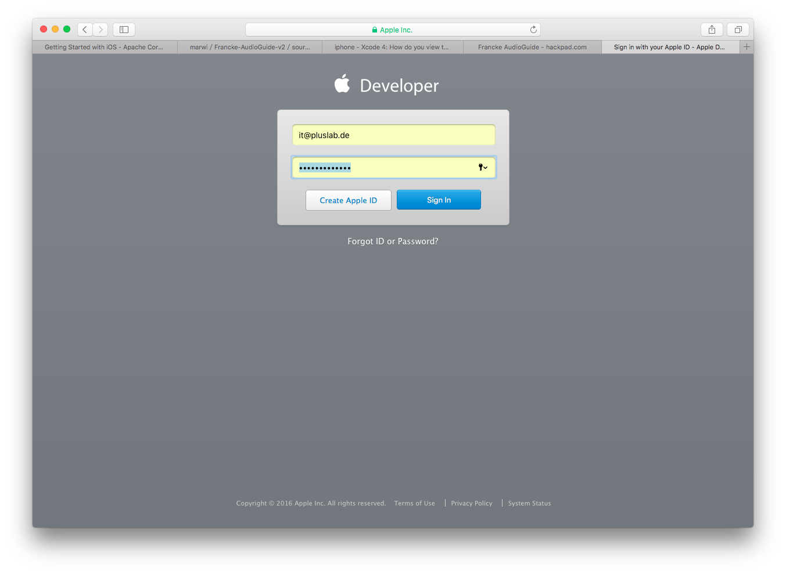
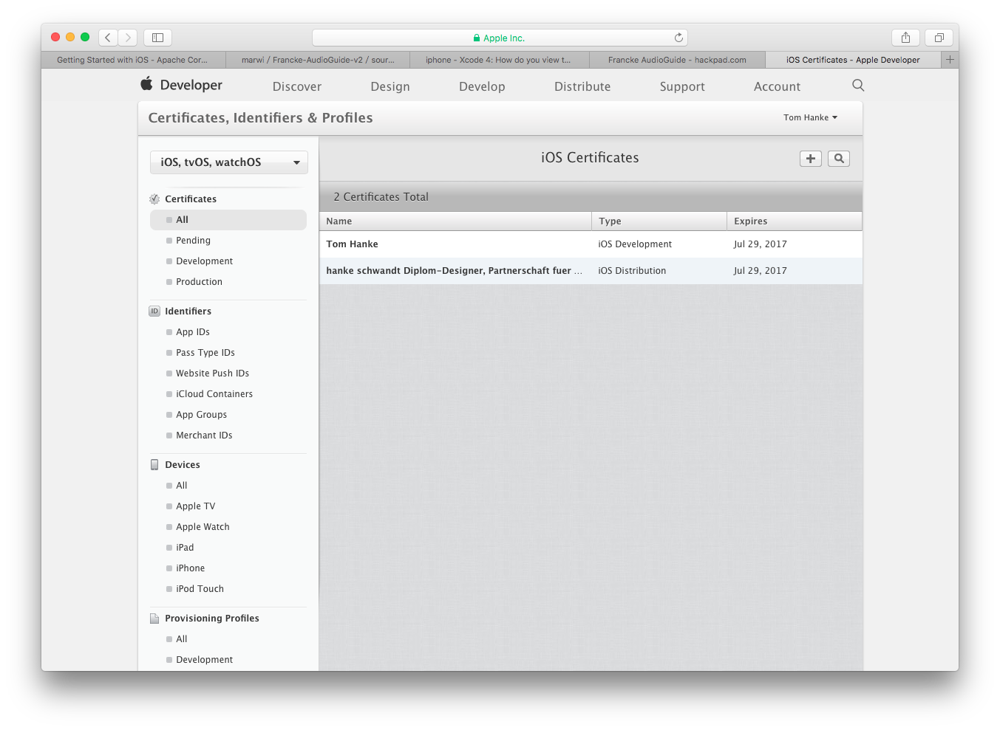
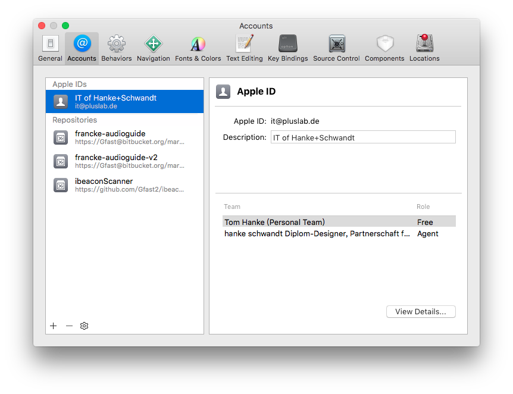
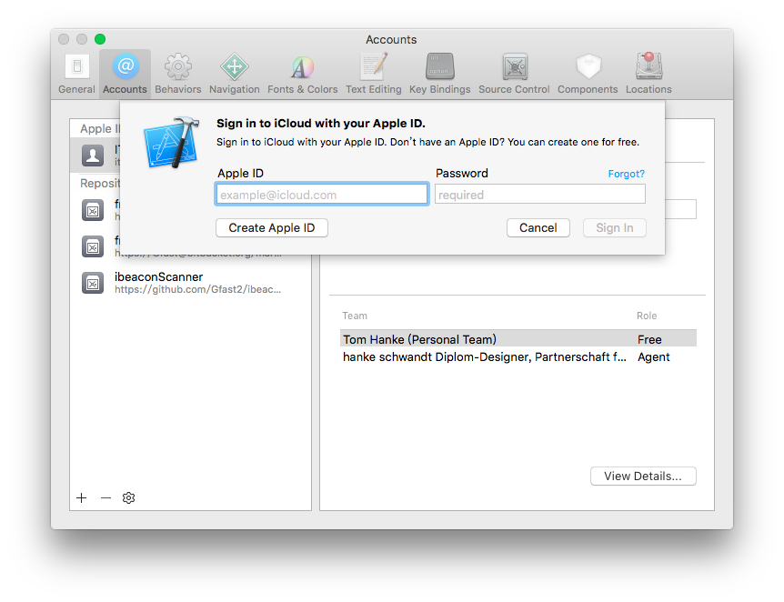
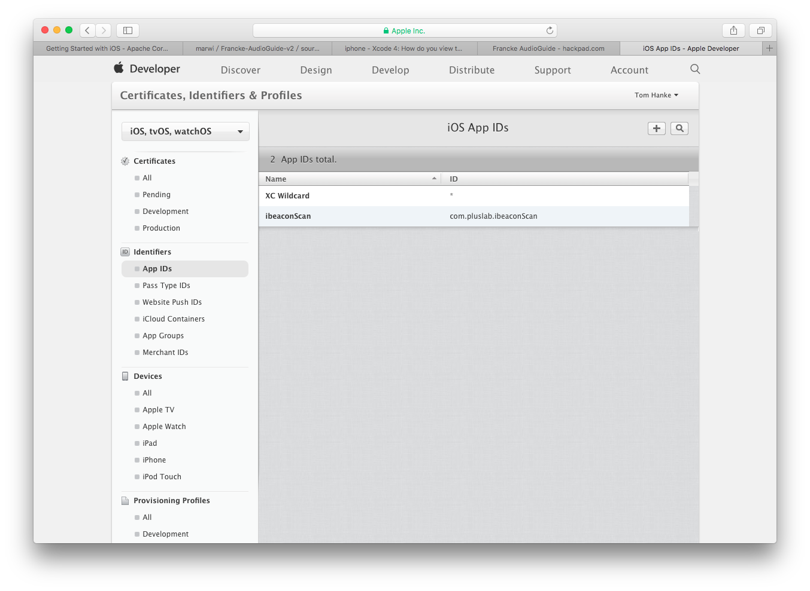
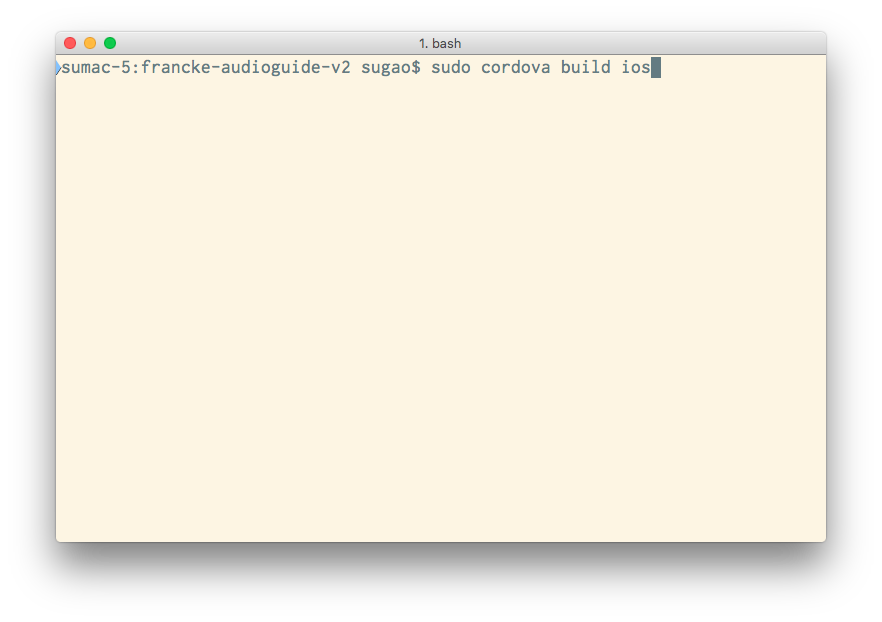
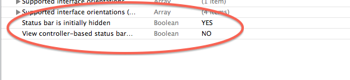
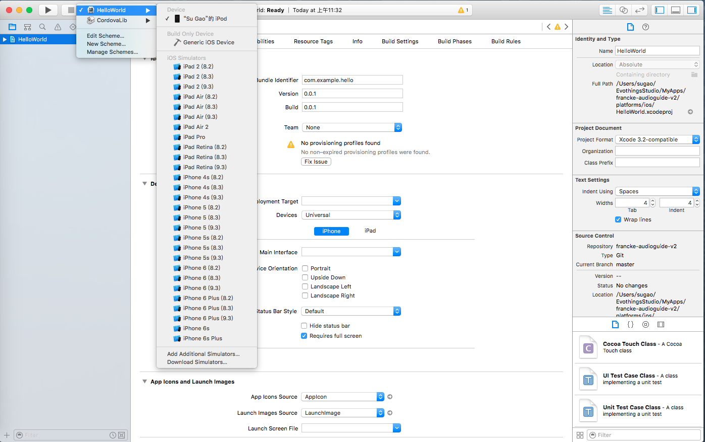
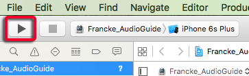

Building und Installation der App auf den Endgeräten
IOS
1. Log in http://developer.apple.com

2. Add certification (developer) account into developer.apple.com

3. Add developer account into xcode
 
4. Open project in xcode

5. Add App ID online

6. Change permission
Once the ios platform is added to your project and built using cordova build, you can open it from within Xcode. Double-click to open the ${PROJECT_NAME}/platforms/ios/${PROJECT_NAME}.xcodeproj file.
source: https://cordova.apache.org/docs/en/latest/guide/platforms/ios/
Troubleshooting "cordova build":
when in compiling get error: compileC error (error code 65)
sudo cordova platform remove ios
sudo cordova platform add ios
sudo cordova platform update ios
sudo cordova build ios

7. Change file permission
Redirect to the target folder:
cd platforms/ios
Change all folder in this folder to fully read / write permission.
find . -type d -exec chmod 777 {} \;
Change all files in this folder to fully read / write permission.
find . -type f -exec chmod 777 {} \;
8. Customize App icon
- Visit https://makeappicon.com to generate all needed icon formats. (The output will be sent through email)
- Uncompress the image package from Email and copy all files (include
Contents.json) into 'projectRootDirectory' -> platforms -> ios -> 'projectName' -> Images.xcassets -> AppIcon.appiconset
9. Customize App splash screen
- Visit http://zeppelindev.com/#splash to generate all needed splash screen images. 'projectRootDirectory' -> platforms -> ios -> 'projectName' -> Images.xcassets -> LaunchImage.launchimage
- for ios 9.* the picures' name from this website is different as the target names. So we need to manually change the name of each picture.
10. Hide Status Bar
-
Add the following to Francke_AudioGuide-Info.plist:
<key>UIStatusBarHidden</key><true/><key>UIViewControllerBasedStatusBarAppearance</key><false/>- 
11. selecte actvie schema (which device)

-
Build (Play button)
-
